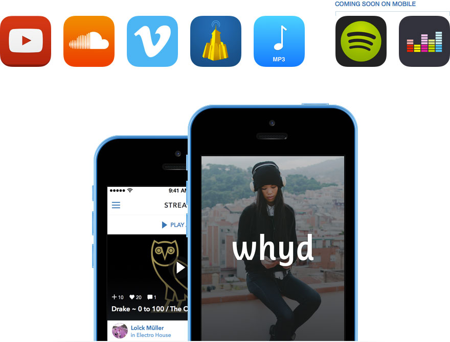

Whyd lets you take your favorite music from the services you use like YouTube, Soundcloud, Vimeo, MP3 blogs, Deezer, and more, to listen, organize, and share.
Features
So what exactly does Openwhyd do?
-
Whyd is a social record collection for all of your streaming music. Thanks to the plethora of music online, it is possible to find nearly any song you can possibly desire, every remix, and many performances. The problem is once you find a track that you like, what do you do with it?
Whyd lets you collect and share the tracks you find, organize them into playlists, share them with anyone, no matter which music service they use, and lets you take your music with you when you are using a different platform from your usual service. Just add your tracks, organize, share, and enjoy.
-
The Green [Add Track] button searches all of your available sources to find the track you are looking for. Find every track you want, every time. Say goodbye to single platform limitations.
Not sure what to listen to? Subscribe to other like-minded music lovers and enjoy a never-ending stream of new music delivered right to you. Never listen to the same song twice if you don’t want to.
Product timeline
Community
We’ve worked hard to cultivate a certain type of active music lover who continuously search across the web for the coolest new music that exists, including exciting concert venues, major record labels, independent artists, hype DJs, off-the-radar bloggers, and everyone in between.
If you want Top 40, turn on your FM radio or queue up Spotify’s charts. If you want to hear something you’ve never expected, check out the community of curators on Whyd.
Team
Whyd is lovingly handcrafted by a group of outrageous music lovers in Paris whose vision for the world is somewhere in between a Nicolas Jaar sweet electronic slide and a KOAN Sound funk blaster. Founded by Gilles Poupardin and Jie Meng-Gerard, the team of seven includes a loud American, a furious drummer, a trendy designer, a bearded expat, a muscled intern, and a combined desire to use technology to take advantage of everything life has to offer.
Contact us for quotes: tony at whyd dot com
{kind=link}